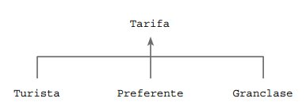
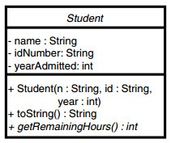
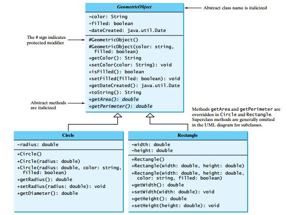
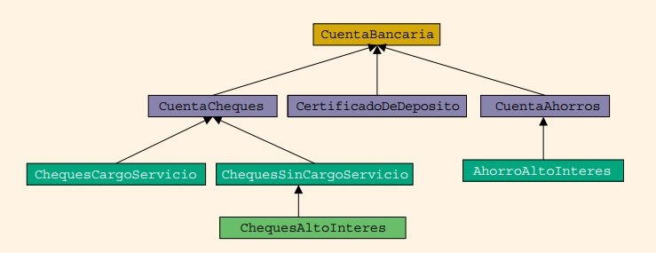

!pip install tutormagic
%load_ext tutormagic
Requirement already satisfied: tutormagic in /home/tigarto/miniconda3/lib/python3.7/site-packages (0.3.0)
Requirement already satisfied: notebook>=3.0 in /home/tigarto/miniconda3/lib/python3.7/site-packages (from tutormagic) (6.0.1)
Requirement already satisfied: jupyter-core>=4.4.0 in /home/tigarto/miniconda3/lib/python3.7/site-packages (from notebook>=3.0->tutormagic) (4.6.1)
Requirement already satisfied: ipython-genutils in /home/tigarto/miniconda3/lib/python3.7/site-packages (from notebook>=3.0->tutormagic) (0.2.0)
Requirement already satisfied: nbconvert in /home/tigarto/miniconda3/lib/python3.7/site-packages (from notebook>=3.0->tutormagic) (5.6.1)
Requirement already satisfied: Send2Trash in /home/tigarto/miniconda3/lib/python3.7/site-packages (from notebook>=3.0->tutormagic) (1.5.0)
Requirement already satisfied: prometheus-client in /home/tigarto/miniconda3/lib/python3.7/site-packages (from notebook>=3.0->tutormagic) (0.7.1)
Requirement already satisfied: jupyter-client>=5.3.1 in /home/tigarto/miniconda3/lib/python3.7/site-packages (from notebook>=3.0->tutormagic) (5.3.3)
Requirement already satisfied: pyzmq>=17 in /home/tigarto/miniconda3/lib/python3.7/site-packages (from notebook>=3.0->tutormagic) (18.1.1)
Requirement already satisfied: traitlets>=4.2.1 in /home/tigarto/miniconda3/lib/python3.7/site-packages (from notebook>=3.0->tutormagic) (4.3.3)
Requirement already satisfied: terminado>=0.8.1 in /home/tigarto/miniconda3/lib/python3.7/site-packages (from notebook>=3.0->tutormagic) (0.8.3)
Requirement already satisfied: jinja2 in /home/tigarto/miniconda3/lib/python3.7/site-packages (from notebook>=3.0->tutormagic) (2.10.3)
Requirement already satisfied: tornado>=5.0 in /home/tigarto/miniconda3/lib/python3.7/site-packages (from notebook>=3.0->tutormagic) (6.0.3)
Requirement already satisfied: ipykernel in /home/tigarto/miniconda3/lib/python3.7/site-packages (from notebook>=3.0->tutormagic) (5.1.3)
Requirement already satisfied: nbformat in /home/tigarto/miniconda3/lib/python3.7/site-packages (from notebook>=3.0->tutormagic) (4.4.0)
Requirement already satisfied: mistune<2,>=0.8.1 in /home/tigarto/miniconda3/lib/python3.7/site-packages (from nbconvert->notebook>=3.0->tutormagic) (0.8.4)
Requirement already satisfied: defusedxml in /home/tigarto/miniconda3/lib/python3.7/site-packages (from nbconvert->notebook>=3.0->tutormagic) (0.6.0)
Requirement already satisfied: bleach in /home/tigarto/miniconda3/lib/python3.7/site-packages (from nbconvert->notebook>=3.0->tutormagic) (3.1.0)
Requirement already satisfied: pygments in /home/tigarto/miniconda3/lib/python3.7/site-packages (from nbconvert->notebook>=3.0->tutormagic) (2.5.2)
Requirement already satisfied: entrypoints>=0.2.2 in /home/tigarto/miniconda3/lib/python3.7/site-packages (from nbconvert->notebook>=3.0->tutormagic) (0.3)
Requirement already satisfied: testpath in /home/tigarto/miniconda3/lib/python3.7/site-packages (from nbconvert->notebook>=3.0->tutormagic) (0.4.4)
Requirement already satisfied: pandocfilters>=1.4.1 in /home/tigarto/miniconda3/lib/python3.7/site-packages (from nbconvert->notebook>=3.0->tutormagic) (1.4.2)
Requirement already satisfied: python-dateutil>=2.1 in /home/tigarto/miniconda3/lib/python3.7/site-packages (from jupyter-client>=5.3.1->notebook>=3.0->tutormagic) (2.8.1)
Requirement already satisfied: decorator in /home/tigarto/miniconda3/lib/python3.7/site-packages (from traitlets>=4.2.1->notebook>=3.0->tutormagic) (4.4.1)
Requirement already satisfied: six in /home/tigarto/miniconda3/lib/python3.7/site-packages (from traitlets>=4.2.1->notebook>=3.0->tutormagic) (1.12.0)
Requirement already satisfied: MarkupSafe>=0.23 in /home/tigarto/miniconda3/lib/python3.7/site-packages (from jinja2->notebook>=3.0->tutormagic) (1.1.1)
Requirement already satisfied: ipython>=5.0.0 in /home/tigarto/miniconda3/lib/python3.7/site-packages (from ipykernel->notebook>=3.0->tutormagic) (7.11.1)
Requirement already satisfied: jsonschema!=2.5.0,>=2.4 in /home/tigarto/miniconda3/lib/python3.7/site-packages (from nbformat->notebook>=3.0->tutormagic) (3.2.0)
Requirement already satisfied: webencodings in /home/tigarto/miniconda3/lib/python3.7/site-packages (from bleach->nbconvert->notebook>=3.0->tutormagic) (0.5.1)
Requirement already satisfied: setuptools>=18.5 in /home/tigarto/miniconda3/lib/python3.7/site-packages (from ipython>=5.0.0->ipykernel->notebook>=3.0->tutormagic) (45.2.0)
Requirement already satisfied: pickleshare in /home/tigarto/miniconda3/lib/python3.7/site-packages (from ipython>=5.0.0->ipykernel->notebook>=3.0->tutormagic) (0.7.5)
Requirement already satisfied: jedi>=0.10 in /home/tigarto/miniconda3/lib/python3.7/site-packages (from ipython>=5.0.0->ipykernel->notebook>=3.0->tutormagic) (0.15.2)
Requirement already satisfied: prompt-toolkit!=3.0.0,!=3.0.1,<3.1.0,>=2.0.0 in /home/tigarto/miniconda3/lib/python3.7/site-packages (from ipython>=5.0.0->ipykernel->notebook>=3.0->tutormagic) (3.0.2)
Requirement already satisfied: backcall in /home/tigarto/miniconda3/lib/python3.7/site-packages (from ipython>=5.0.0->ipykernel->notebook>=3.0->tutormagic) (0.1.0)
Requirement already satisfied: pexpect; sys_platform != "win32" in /home/tigarto/miniconda3/lib/python3.7/site-packages (from ipython>=5.0.0->ipykernel->notebook>=3.0->tutormagic) (4.7.0)
Requirement already satisfied: importlib-metadata; python_version < "3.8" in /home/tigarto/miniconda3/lib/python3.7/site-packages (from jsonschema!=2.5.0,>=2.4->nbformat->notebook>=3.0->tutormagic) (1.3.0)
Requirement already satisfied: pyrsistent>=0.14.0 in /home/tigarto/miniconda3/lib/python3.7/site-packages (from jsonschema!=2.5.0,>=2.4->nbformat->notebook>=3.0->tutormagic) (0.15.6)
Requirement already satisfied: attrs>=17.4.0 in /home/tigarto/miniconda3/lib/python3.7/site-packages (from jsonschema!=2.5.0,>=2.4->nbformat->notebook>=3.0->tutormagic) (19.3.0)
Requirement already satisfied: parso>=0.5.2 in /home/tigarto/miniconda3/lib/python3.7/site-packages (from jedi>=0.10->ipython>=5.0.0->ipykernel->notebook>=3.0->tutormagic) (0.5.2)
Requirement already satisfied: wcwidth in /home/tigarto/miniconda3/lib/python3.7/site-packages (from prompt-toolkit!=3.0.0,!=3.0.1,<3.1.0,>=2.0.0->ipython>=5.0.0->ipykernel->notebook>=3.0->tutormagic) (0.1.8)
Requirement already satisfied: ptyprocess>=0.5 in /home/tigarto/miniconda3/lib/python3.7/site-packages (from pexpect; sys_platform != "win32"->ipython>=5.0.0->ipykernel->notebook>=3.0->tutormagic) (0.6.0)
Requirement already satisfied: zipp>=0.5 in /home/tigarto/miniconda3/lib/python3.7/site-packages (from importlib-metadata; python_version < "3.8"->jsonschema!=2.5.0,>=2.4->nbformat->notebook>=3.0->tutormagic) (0.6.0)
Requirement already satisfied: more-itertools in /home/tigarto/miniconda3/lib/python3.7/site-packages (from zipp>=0.5->importlib-metadata; python_version < "3.8"->jsonschema!=2.5.0,>=2.4->nbformat->notebook>=3.0->tutormagic) (8.0.2)
Métodos y clases abstractas¶
Recordando herencia y polimorfismos¶
El las clases anteriores se vieron los conceptos de herencia y polimorfismo y su importancia para permitir el reuso de código (en el caso reuso de atributos y métodos de una clase existente cuando se crea una nueva). Veamos el siguiente ejemplo de polimorfismo tomado de w3schools.com.
%%tutor -l java -k
public class MyMainClass {
public static void main(String[] args) {
Animal myAnimal = new Animal(); // Create a Animal object
Animal myPig = new Pig(); // Create a Pig object
Animal myDog = new Dog(); // Create a Dog object
myAnimal.animalSound();
myPig.animalSound();
myDog.animalSound();
}
}
class Animal {
public void animalSound() {
System.out.println("The animal makes a sound");
}
}
class Pig extends Animal {
public void animalSound() {
System.out.println("The pig says: wee wee");
}
}
class Dog extends Animal {
public void animalSound() {
System.out.println("The dog says: bow wow");
}
}
Clases y métodos abstractos¶
Metodo abstracto¶
Un método abstracto es un método que aparece en una superclase, pero que espera ser sobreescrito en una subclase. Este tipo de metodo sólo tiene el encabezado sin cuerpo. El encabezado de un método abstracto contiene la palabra reservada abstract y termina con un punto y coma. Tal y como se muestra a continuación:
especificadorDeAcceso abstract tipoDeRetorno nombreMetodo(listaDeParametros);
Algunos ejemplos se muestran a continuación de la declaración de un método abstracto se muestra a continuación:
public void abstract print();
public abstract object larger(object, object);
void abstract insert(int insertItem);
public abstract void setValue(int value);
Clase abstracta¶
Es una clase que pese a no ser instanciable permite que otras clases puedan heredar de esta. Para declarar una clase abstracta, se usa la palabra reservada abstract en su encabezado tal y como se muestra a continuación:
public abstract class NombreClase
Ejemplo : A continuación se muestra un ejemplo donde se ilustra lo anterior:

A continuación se muestra el fragmento de código de cada una de las clases mostradas anteriormente:
public abstract class Tarifa {
private String fecha;
private double tasas;
...
public abstract void calculoCoste();
...
}
public class Turista extends Tarifa {
// Codigo
...
}
public class Preferente extends Tarifa {
// Codigo
...
}
public class GlanClase extends Tarifa {
// Codigo
...
}
Aspectos claves sobre la clases y métodos abstractos¶
A continuación se muestran algunos aspectos importantes a tener en cuenta al usar clases y metodos abstractos:
Una clase abstracta puede contener variables de instancias, constructores, finalizador y métodos no abstractos:
public abstract class EjemploClaseAbstracta {
protected int x;
public abstract void print();
public EjemploClaseAbstracta() {
x = 0;
}
public void setX(int a) {
x = a;
}
}
Una clase abstracta puede contener un(os) método(s) abstracto(s):
public abstract class GeometricObject {
private String color = "white";
private boolean filled;
...
public String getColor() {
return color;
}
public void setColor(String color) {
this.color = color;
}
...
public abstract double getArea();
public abstract double getPerimeter();
}
Si una clase contiene un método abstracto, entonces la clase se debe declarar abstracta.
No se puede convertir en instancia un objeto de una clase abstracta. Sólo se puede declarar una variable de referencia de un tipo de clase abstracta.
public abstract class GeometricObject {
...
public abstract double getArea();
public abstract double getPerimeter();
}
Si por ejemplo se intentara instanciar la clase abstracta tal como se muestra a continuación:
GeometricObject figura1 = new GeometricObject(); // ERROR: no se puede instanciar de clase
// abstracta
Por otro lado, si se puede definir una referencia si es algo valido:
GeometricObject figura1; // Notese que no se instancio un objeto del tipo de la clase abstracta
Se puede convertir en instancia un objeto de una subclase de una clase abstracta, pero sólo si la subclase da las definiciones de todos los métodos abstractos de la superclase.
Para explicar esto, supongase que se crea una subclase llamada Rectangle de la clase abstracta GeometricObject definiendo los metodos getArea y getPerimeter; el fragmento de código se muestra a continuación:
public class Rectangle extends GeometricObject {
private height, width;
...
public double getArea() {
return height*width;
}
public double getPerimeter() {
return 2*(width + width);
}
}
Como la clase Rectangle ya define todos los métodos abstractos de la clase padre, puede ser instaciada, de este modo, teniendo en cuenta lo aprendido en poliformismo, podemos definir una referencia a una clase base que apunte a un objeto de una subclase, asi:
GeometricObject figura1;
figura1 = new Rectangle();
Clases y métodos abstractos en UML¶
Las clases abstractas en UML son dibujadas como clases normales, excepto que el nombre de la clase y los nomrbes de los medodos abstractos son mostrados en letra italica. La siguiente figura muestra un ejemplo:

Ejemplos¶
Ejemplo 1¶
Dado el siguiente diagrama UML asociado a la clase Student:
Realizar su codificacación:
Clase: Student.java
/**
The Student class is an abstract class that holds
general data about a student. Classes representing
specific types of students should inherit from
this class.
*/
public abstract class Student
{
private String name; // Student name
private String idNumber; // Student ID
private int yearAdmitted; // Year admitted
/**
The Constructor sets the student's name,
ID number, and year admitted.
@param n The student's name.
@param id The student's ID number.
@param year The year the student was admitted.
*/
public Student(String n, String id, int year)
{
name = n;
idNumber = id;
yearAdmitted = year;
}
/**
The toString method returns a String containing
the student's data.
@return A reference to a String.
*/
public String toString()
{
String str;
str = "Name: " + name
+ "\nID Number: " + idNumber
+ "\nYear Admitted: " + yearAdmitted;
return str;
}
/**
The getRemainingHours method is abstract.
It must be overridden in a subclass.
@return The hours remaining for the student.
*/
public abstract int getRemainingHours();
}
Sobreescribir el método abstracto definido en la clase anterior.
Clase: CompSciStuden.java
/**
This class holds data for a computer science student.
*/
public class CompSciStudent extends Student
{
// Required hours
private final int MATH_HOURS = 20; // Math hours
private final int CS_HOURS = 40; // Comp sci hours
private final int GEN_ED_HOURS = 60; // Gen ed hours
// Hours taken
private int mathHours; // Math hours taken
private int csHours; // Comp sci hours taken
private int genEdHours; // General ed hours taken
/**
The Constructor sets the student's name,
ID number, and the year admitted.
@param n The student's name.
@param id The student's ID number.
@param year The year the student was admitted.
*/
public CompSciStudent(String n, String id, int year)
{
super(n, id, year);
}
/**
The setMathHours method sets the number of
math hours taken.
@param math The math hours taken.
*/
public void setMathHours(int math)
{
mathHours = math;
}
/**
The setCsHours method sets the number of
computer science hours taken.
@param cs The computer science hours taken.
*/
public void setCsHours(int cs)
{
csHours = cs;
}
/**
The setGenEdHours method sets the number of
general ed hours taken.
@param genEd The general ed hours taken.
*/
public void setGenEdHours(int genEd)
{
genEdHours = genEd;
}
/**
The getRemainingHours method returns the
the number of hours remaining to be taken.
@return The hours remaining for the student.
*/
@Override
public int getRemainingHours()
{
int reqHours, // Total required hours
remainingHours; // Remaining hours
// Calculate the required hours.
reqHours = MATH_HOURS + CS_HOURS + GEN_ED_HOURS;
// Calculate the remaining hours.
remainingHours = reqHours - (mathHours + csHours
+ genEdHours);
return remainingHours;
}
/**
The toString method returns a string containing
the student's data.
@return A reference to a String.
*/
@Override
public String toString()
{
String str;
str = super.toString() +
"\nMajor: Computer Science" +
"\nMath Hours Taken: " + mathHours +
"\nComputer Science Hours Taken: " + csHours +
"\nGeneral Ed Hours Taken: " + genEdHours;
return str;
}
}
Finalmente, realizar una prueba donde se evidencie el resultado de las clases anteriormente planteadas:
Clase: CompSciStuden.java
/**
This program demonstrates the CompSciStudent class.
*/
public class CompSciStudentDemo
{
public static void main(String[] args)
{
// Create a CompSciStudent object.
CompSciStudent csStudent =
new CompSciStudent("Jennifer Haynes",
"167W98337", 2015);
// Store values for math, CS, and gen ed hours.
csStudent.setMathHours(12);
csStudent.setCsHours(20);
csStudent.setGenEdHours(40);
// Display the student's data.
System.out.println(csStudent);
// Display the number of remaining hours.
System.out.println("Hours remaining: " +
csStudent.getRemainingHours());
}
}
El resultado en pantalla, para un caso de test, se muestra a continuación:
Name: Jennifer Haynes
ID Number: 167W98337
Year Admitted: 2011
Major: Computer Science
Math Hours Taken: 12
Computer Science Hours Taken: 20
General Ed Hours Taken: 40
Hours remaining: 48
En el siguiente enlace se puede ejecutar el código anteriormente mostrado.
Ejemplo 2¶
A continuación se van a implementar las diferentes clases asociadas al siguiente diagrama UML:

A continuación se muestra el codigo correspondiente en cada caso:
Clase: GeometricObject.java
public abstract class GeometricObject {
private String color = "white";
private boolean filled;
private java.util.Date dateCreated;
/** Construct a default geometric object */
protected GeometricObject() {
dateCreated = new java.util.Date();
}
/** Construct a geometric object with color and filled value */
protected GeometricObject(String color, boolean filled) {
dateCreated = new java.util.Date();
this.color = color;
this.filled = filled;
}
/** Return color */
public String getColor() {
return color;
}
/** Set a new color */
public void setColor(String color) {
this.color = color;
}
/** Return filled. Since filled is boolean,
* the get method is named isFilled */
public boolean isFilled() {
return filled;
}
/** Set a new filled */
public void setFilled(boolean filled) {
this.filled = filled;
}
/** Get dateCreated */
public java.util.Date getDateCreated() {
return dateCreated;
}
@Override
public String toString() {
return "created on " + dateCreated + "\ncolor: " + color + " and filled: " + filled;
}
/** Abstract method getArea */
public abstract double getArea();
/** Abstract method getPerimeter */
public abstract double getPerimeter();
}
Clase: Circle.java
public class Circle extends GeometricObject {
private double radius;
public Circle() {
}
public Circle(double radius) {
this.radius = radius;
}
public Circle(double radius, String color, boolean filled) {
this.radius = radius;
setColor(color);
setFilled(filled);
}
/** Return radius */
public double getRadius() {
return radius;
}
/** Set a new radius */
public void setRadius(double radius) {
this.radius = radius;
}
/** Return area */
public double getArea() {
return radius * radius * Math.PI;
}
/** Return diameter */
public double getDiameter() {
return 2 * radius;
}
/** Return perimeter */
public double getPerimeter() {
return 2 * radius * Math.PI;
}
/** Print the circle info */
public void printCircle() {
System.out.println("The circle is created " + getDateCreated() +
" and the radius is " + radius);
}
}
Clase: Rectangle.java
public class Rectangle extends GeometricObject{
private double width;
private double height;
public Rectangle() {
}
public Rectangle(double width, double height) {
this.width = width;
this.height = height;
}
public Rectangle(double width, double height, String color, boolean filled) {
this.width = width;
this.height = height;
setColor(color);
setFilled(filled);
}
/** Return width */
public double getWidth() {
return width;
}
/** Set a new width */
public void setWidth(double width) {
this.width = width;
}
/** Return height */
public double getHeight() {
return height;
}
/** Set a new height */
public void setHeight(double height) {
this.height = height;
}
/** Return area */
public double getArea() {
return width * height;
}
/** Return perimeter */
public double getPerimeter() {
return 2 * (width + height);
}
}
Clase: TestGeometricObject.java
public class TestGeometricObject {
/** Main method */
public static void main(String[] args) {
// Create two geometric objects
GeometricObject geoObject1 = new Circle(5);
GeometricObject geoObject2 = new Rectangle(5, 3);
System.out.println("The two objects have the same area? " + equalArea(geoObject1, geoObject2));
// Display circle
displayGeometricObject(geoObject1);
// Display rectangle
displayGeometricObject(geoObject2);
}
/** A method for comparing the areas of two geometric objects */
public static boolean equalArea(GeometricObject object1, GeometricObject object2) {
return object1.getArea() == object2.getArea();
}
/** A method for displaying a geometric object */
public static void displayGeometricObject(GeometricObject object) {
System.out.println();
System.out.println("The area is " + object.getArea());
System.out.println("The perimeter is " + object.getPerimeter());
}
}
El resultado tras correr el programa anteriormente mencionado se muestra a continuación:
The two objects have the same area? false
The area is 78.53981633974483
The perimeter is 31.41592653589793
The area is 15.0
The perimeter is 16.0
El enlace para correr el codigo anteriormente mostrado se encuentra a continuación: enlace.
Ejemplo 3 (incompleto)¶
Los bancos ofrecen varios tipos de cuentas, como de ahorros, cheques, certificados de depósito y mercado de valores, para atraer clientes así como para cumplir con sus necesidades específicas. En este ejemplo, se ilustra cómo utilizar las clases abstractas y el polimorfismo para procesar diferentes tipos de cuentas bancarias. Dos de las cuentas bancarias más comunes son las de ahorros y cheques. Cada una de estas tiene varias opciones. Por ejemplo, es posible tener una cuenta de ahorros que no requiera de un saldo mínimo, pero tiene un tasa de interés más baja. De manera similar, se puede tener una cuenta de cheques que limita el número de cheques a emitir cada mes. Otro tipo de cuenta que se utiliza para ahorrar dinero a largo plazo es un certificado de depósito (CD). Para ilustrar cómo se diseñan las clases abstractas y cómo funciona el polimorfismo, se supone que el banco ofrece tres tipos de cuentas: ahorros, cheques y certificados de depósito, como se describen a continuación.
Cuentas de ahorros: suponga que el banco ofrece dos tipos de cuentas de ahorros: una que no requiere de un saldo mínimo y tiene un tasa de interés más baja y otra que requiere de un saldo mínimo y que tiene una tasa de interés más alta.
Cuentas de cheques: suponga que el banco ofrece tres tipos de cuentas de cheques: una con un cargo mensual por el servicio, un número limitado de emisión de cheques mensual, sin saldo mínimo y sin pago de interés; otra sin cargo mensual por el servicio, requiere de un saldo mínimo, permite emitir un número ilimitado de cheques al mes, paga un interés más bajo, y una tercera sin cargo mensual por el servicio, requiere de un saldo mínimo más alto, tiene un tasa de interés más alta y permite emitir un número ilimitado de cheques al mes.
Certificado de depósito (CD): en una cuenta de este tipo, el dinero se deja durante cierto tiempo y estas cuentas obtienen tasas de interés más altas que las de ahorros o de cheques. Suponga que compró un CD durante seis meses. Entonces se dice que el CD madurará en seis. Además, la penalidad por un retiro antes de los seis meses es muy alta.
A continuación se muestra la jerarquia de las cuentas bancarias asociada al problema:
